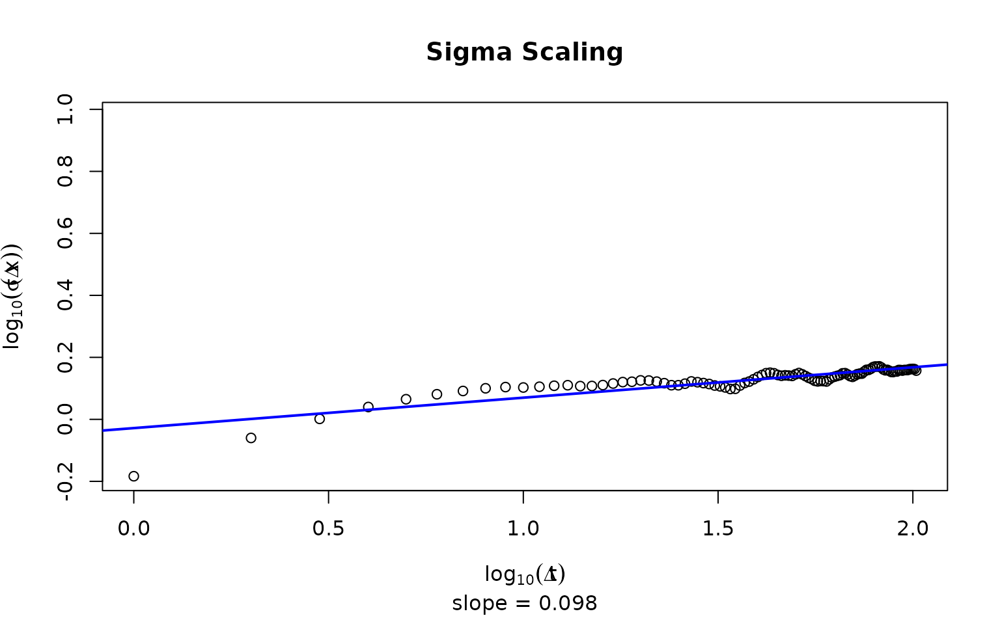

Calculates the sigma scaling of the chain, and optionally plots the result.
calc_sigma_scaling(chain, plot = FALSE)A list containing the vector of possible lags, the sd of the distances at each lag, their log10 counterparts, and the calculated intercept and slope.
Sigma scaling is defined as the slope of the regression connecting log time lags and the standard deviation of value changes across time lags. Markets show values of 0.5.
set.seed(1)
chain1 <- sampler_mh(1, "norm", c(0,1), diag(1))
calc_sigma_scaling(chain1[[1]], plot = TRUE)

#> $lag
#> [1] 1 2 3 4 5 6 7 8 9 10 11 12 13 14 15 16 17 18
#> [19] 19 20 21 22 23 24 25 26 27 28 29 30 31 32 33 34 35 36
#> [37] 37 38 39 40 41 42 43 44 45 46 47 48 49 50 51 52 53 54
#> [55] 55 56 57 58 59 60 61 62 63 64 65 66 67 68 69 70 71 72
#> [73] 73 74 75 76 77 78 79 80 81 82 83 84 85 86 87 88 89 90
#> [91] 91 92 93 94 95 96 97 98 99 100 101 102
#>
#> $log_lag
#> [1] 0.0000000 0.3010300 0.4771213 0.6020600 0.6989700 0.7781513 0.8450980
#> [8] 0.9030900 0.9542425 1.0000000 1.0413927 1.0791812 1.1139434 1.1461280
#> [15] 1.1760913 1.2041200 1.2304489 1.2552725 1.2787536 1.3010300 1.3222193
#> [22] 1.3424227 1.3617278 1.3802112 1.3979400 1.4149733 1.4313638 1.4471580
#> [29] 1.4623980 1.4771213 1.4913617 1.5051500 1.5185139 1.5314789 1.5440680
#> [36] 1.5563025 1.5682017 1.5797836 1.5910646 1.6020600 1.6127839 1.6232493
#> [43] 1.6334685 1.6434527 1.6532125 1.6627578 1.6720979 1.6812412 1.6901961
#> [50] 1.6989700 1.7075702 1.7160033 1.7242759 1.7323938 1.7403627 1.7481880
#> [57] 1.7558749 1.7634280 1.7708520 1.7781513 1.7853298 1.7923917 1.7993405
#> [64] 1.8061800 1.8129134 1.8195439 1.8260748 1.8325089 1.8388491 1.8450980
#> [71] 1.8512583 1.8573325 1.8633229 1.8692317 1.8750613 1.8808136 1.8864907
#> [78] 1.8920946 1.8976271 1.9030900 1.9084850 1.9138139 1.9190781 1.9242793
#> [85] 1.9294189 1.9344985 1.9395193 1.9444827 1.9493900 1.9542425 1.9590414
#> [92] 1.9637878 1.9684829 1.9731279 1.9777236 1.9822712 1.9867717 1.9912261
#> [99] 1.9956352 2.0000000 2.0043214 2.0086002
#>
#> $sds
#> [1] 0.6554206 0.8710101 1.0034985 1.0960127 1.1611904 1.2049326 1.2345926
#> [8] 1.2595104 1.2708884 1.2669402 1.2742124 1.2834349 1.2885459 1.2800990
#> [15] 1.2812005 1.2898789 1.3049639 1.3189057 1.3222918 1.3357071 1.3343457
#> [22] 1.3233383 1.3081025 1.2886969 1.2883123 1.3034216 1.3252610 1.3175539
#> [29] 1.3092352 1.3001075 1.2856377 1.2780053 1.2676980 1.2528074 1.2547195
#> [36] 1.2857501 1.3102554 1.3237884 1.3461923 1.3697272 1.3894854 1.4087657
#> [43] 1.4140893 1.4080247 1.3902201 1.3822379 1.3871251 1.3843969 1.3807283
#> [50] 1.3975809 1.4106889 1.3969380 1.3793140 1.3618938 1.3494642 1.3317206
#> [57] 1.3257360 1.3304557 1.3284470 1.3248134 1.3465174 1.3648130 1.3731731
#> [64] 1.3813399 1.3887305 1.4074104 1.4092117 1.3949106 1.3785142 1.3713388
#> [71] 1.3842391 1.3986769 1.4043774 1.4047372 1.4261118 1.4445472 1.4442605
#> [78] 1.4562652 1.4732892 1.4809510 1.4795165 1.4825966 1.4697102 1.4489517
#> [85] 1.4395264 1.4443550 1.4339104 1.4222052 1.4209442 1.4279155 1.4270024
#> [92] 1.4427819 1.4421180 1.4364234 1.4426135 1.4429096 1.4425540 1.4512988
#> [99] 1.4525725 1.4543142 1.4518143 1.4363062
#>
#> $log_sds
#> [1] -0.183479915 -0.059976800 0.001516722 0.039815604 0.064903449
#> [6] 0.080962772 0.091523673 0.100201744 0.104107408 0.102756105
#> [11] 0.105241825 0.108373848 0.110099903 0.107243551 0.107617116
#> [16] 0.110548934 0.115598486 0.120213759 0.121327292 0.125711251
#> [21] 0.125268354 0.121670869 0.116641790 0.110150777 0.110021141
#> [26] 0.115084914 0.122301425 0.119768403 0.117017660 0.113979270
#> [31] 0.109118588 0.106532666 0.103015822 0.097884298 0.098546660
#> [36] 0.109156550 0.117355944 0.121818577 0.129107101 0.136634076
#> [41] 0.142853998 0.148838764 0.150476821 0.148610278 0.143083577
#> [46] 0.140582807 0.142115624 0.141260627 0.140108241 0.145376960
#> [51] 0.149431258 0.145177118 0.139663136 0.134143255 0.130161381
#> [56] 0.124413122 0.122457048 0.124000404 0.123344225 0.122154721
#> [61] 0.129211956 0.135073166 0.137725298 0.140300559 0.142617967
#> [66] 0.148420743 0.148976255 0.144546379 0.139411251 0.137144778
#> [71] 0.141211097 0.145717414 0.147483839 0.147595079 0.154153559
#> [76] 0.159731729 0.159645522 0.163240470 0.168288006 0.170540681
#> [81] 0.170119812 0.171023010 0.167231709 0.161053908 0.158219620
#> [86] 0.159673945 0.156522009 0.152962251 0.152577019 0.154702519
#> [91] 0.154424711 0.159200679 0.159000786 0.157282484 0.159149989
#> [96] 0.159239109 0.159132082 0.161756847 0.162137824 0.162658242
#> [101] 0.161911084 0.157247040
#>
#> $intercept
#> [1] -0.02822949
#>
#> $slope
#> [1] 0.09810482
#>